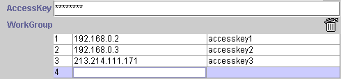
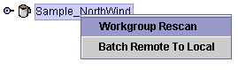
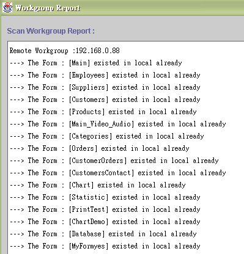
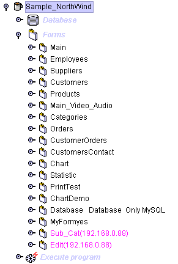
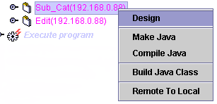
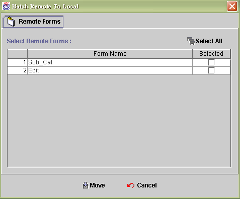

|
|
|
Workgroup makes use of team work. The project leader can scan all member's program but he must have the access key of each member. Therefore project leader can set his own key and hold his team access keys to control achieved percentage of scheduled progress. The workgroup member could locate not only in local area network but also internet.
And take notice of some specifics about the member's directory. All workgroup members have to share the directory which application locate. For example when the application locate at C:\jLIVE\programs\jNorth\ and all your need is to share the jNorth directory and jLIVE install directory. to workgroup member. Hence the application workgroup will be complete.

Select the application node and click mouse right button. It will show two selection. You have to input the workgroup IP/name and access key before right click mouse button then the selection will be work.

Scan workgroup report : After scan workgroup, the workgroup report will list out those forms which already existed in local.

After scan complete, you will find some form names are listed in pink text. It means that they are referred forms from the other team worker. During this time, you can open those forms from your own form ,also explore all the details in those forms by entering into the design mode. Even alter the initial design and testing the result. The only thing you can't do is to save the changes. If you want to modify the design forever, please move the form to local first.

If you only need move one form to local, you can select the target form and click the right button of mouse. You will see the selection " Remote To Local ". Click this selection and the selected form will be moved to local.

Select remote forms : You can choose forms you need and move them to local. The " select all " button will select all new forms and click " move " button to move them.

|
|
|
|
Copyright © 2001~ 2004 Probe.com.tw . All Rights Reserved.
Questions, comments, and suggestions to Service@probe.com.tw